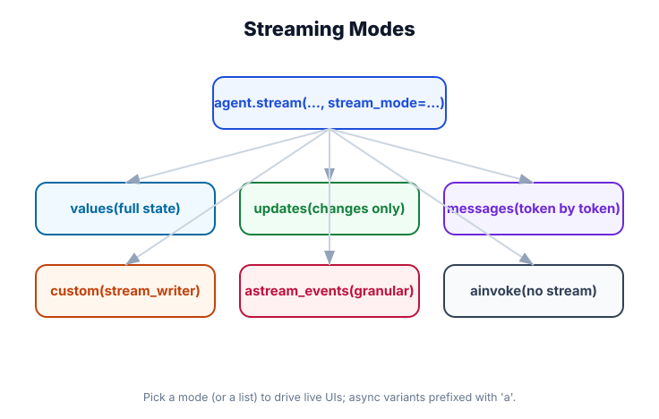

Streaming
What you'll learn: How to stream agent output token by token, the three stream modes (values, updates, messages), how to build a live chat UI with streaming, and async streaming patterns for production.

↗ Open full size · ⬇ Edit in Excalidraw — labels use real LangChain classes.
Without streaming, you call invoke() and wait — nothing appears until the agent is completely done, which might take 10+ seconds. That's downloading the video before you can watch it. Streaming lets you display tokens as they arrive, so users see a response forming in real time — like Netflix starting playback immediately while buffering the rest.
The Three Stream Modes
LangChain's agent.stream() takes a stream_mode parameter. Click a card to see what each mode returns:
Token-by-Token
Best for: chat UIs, live typewriter effect
Full State Snapshots
Best for: debugging, step-through inspection
State Diffs
Best for: progress tracking, fine-grained UI
Interactive Streaming Demo
This simulates what streaming output looks like at runtime. The color coding shows the different event types your code receives:
Streaming Code — All Three Modes
from langchain.agents import create_agent
from langchain.chat_models import init_chat_model
from langchain.tools import tool
from langchain_core.messages import HumanMessage, AIMessageChunk
@tool
def search_web(query: str) -> str:
"""Search the web for information."""
return f"Results for '{query}': Found relevant articles..."
agent = create_agent(
model=init_chat_model("openai:gpt-4o-mini", temperature=0.7),
tools=[search_web],
)
input_data = {"messages": [HumanMessage("Search for LangChain and explain what it is")]}
# ── Mode 1: "messages" — token by token ──────────────────────────────────────
# Best for: chat UIs, live typewriter effect
# Each chunk is: (message_or_chunk, metadata)
print("=== MESSAGES MODE ===")
for chunk, metadata in agent.stream(input_data, stream_mode="messages"):
if isinstance(chunk, AIMessageChunk) and chunk.content:
# These are the text tokens streaming in
print(chunk.content, end="", flush=True)
print() # newline at end
# ── Mode 2: "values" — full state after each step ────────────────────────────
# Best for: debugging, seeing full message history at each step
# Each event is the complete agent state (all messages)
print("\n=== VALUES MODE ===")
for state in agent.stream(input_data, stream_mode="values"):
last_msg = state["messages"][-1]
print(f"Step → {last_msg.type}: {str(last_msg.content)[:80]}...")
# ── Mode 3: "updates" — what changed each step ────────────────────────────────
# Best for: fine-grained UI updates (show tool calls as they happen)
# Each event is a dict: {node_name: state_delta}
print("\n=== UPDATES MODE ===")
for update in agent.stream(input_data, stream_mode="updates"):
for node_name, delta in update.items():
msgs = delta.get("messages", [])
for msg in msgs:
print(f"[{node_name}] {msg.type}: {str(msg.content)[:80]}")
# ── Multiple modes simultaneously ─────────────────────────────────────────────
for event_type, data in agent.stream(
input_data,
stream_mode=["values", "updates"] # can combine!
):
print(f"Event: {event_type}")Async Streaming — For Production Servers
import asyncio
from langchain.agents import create_agent
from langchain.chat_models import init_chat_model
from langchain_core.messages import HumanMessage, AIMessageChunk
agent = create_agent(
model=init_chat_model("openai:gpt-4o-mini"),
tools=[],
)
# ── Async token streaming ──────────────────────────────────────────────────────
async def stream_tokens(message: str) -> str:
"""Stream tokens, collect and return full response."""
full_response = ""
async for chunk, metadata in agent.astream(
{"messages": [HumanMessage(message)]},
stream_mode="messages"
):
if isinstance(chunk, AIMessageChunk) and chunk.content:
full_response += chunk.content
# In a real app, push to WebSocket or SSE here:
print(chunk.content, end="", flush=True)
print()
return full_response
# ── FastAPI SSE endpoint (production pattern) ─────────────────────────────────
# from fastapi import FastAPI
# from fastapi.responses import StreamingResponse
# app = FastAPI()
#
# @app.post("/chat")
# async def chat(request: dict):
# async def generate():
# async for chunk, _ in agent.astream(
# {"messages": [HumanMessage(request["message"])]},
# stream_mode="messages"
# ):
# if hasattr(chunk, 'content') and chunk.content:
# # Server-Sent Events format
# yield f"data: {chunk.content}\n\n"
# yield "data: [DONE]\n\n"
#
# return StreamingResponse(generate(), media_type="text/event-stream")
asyncio.run(stream_tokens("Explain machine learning in 3 sentences"))
# ── Cancelling a stream ────────────────────────────────────────────────────────
async def cancelable_stream():
try:
async for chunk, _ in agent.astream(
{"messages": [HumanMessage("Write a very long essay")]},
stream_mode="messages"
):
if isinstance(chunk, AIMessageChunk) and chunk.content:
print(chunk.content, end="", flush=True)
# Cancel after first 200 chars:
# just break out of the async for loop
except asyncio.CancelledError:
print("\n[Stream cancelled]")Filtering Tool Calls from Streaming Output
When using stream_mode="messages", you receive all events including tool calls. Here's how to filter to only show the final text response in a UI:
from langchain_core.messages import AIMessageChunk, ToolMessage
# ── Pattern 1: Only show final text tokens (skip tool activity) ───────────────
for chunk, metadata in agent.stream(input_data, stream_mode="messages"):
if isinstance(chunk, AIMessageChunk):
# Skip tool call chunks (they have tool_call_chunks, not content)
if chunk.content and not chunk.tool_call_chunks:
print(chunk.content, end="", flush=True)
# ── Pattern 2: Show everything with labels ────────────────────────────────────
for chunk, metadata in agent.stream(input_data, stream_mode="messages"):
if isinstance(chunk, AIMessageChunk):
if chunk.content:
print(f"[AI] {chunk.content}", end="", flush=True)
if chunk.tool_call_chunks:
for tc in chunk.tool_call_chunks:
if tc.get("name"):
print(f"\n[🔧 Calling tool: {tc['name']}...]", end="", flush=True)
elif isinstance(chunk, ToolMessage):
print(f"\n[Tool result: {str(chunk.content)[:50]}...]", end="", flush=True)
print()
# ── Pattern 3: Using metadata to filter by source ─────────────────────────────
for chunk, metadata in agent.stream(input_data, stream_mode="messages"):
# metadata contains: {"langgraph_node": "agent", "langgraph_step": 1, ...}
if metadata.get("langgraph_node") == "agent":
# Only events from the agent node (skip tool nodes)
if isinstance(chunk, AIMessageChunk) and chunk.content:
print(chunk.content, end="", flush=True)Some models stream the final text response token by token but deliver tool calls as a single chunk (not incrementally). This is a provider limitation, not a LangChain limitation. OpenAI and Anthropic both stream tool call arguments incrementally. Ollama local models may not. Test your specific model if incremental tool call streaming is important to your UI.
When streaming, state is saved to the checkpointer only after the stream completes (the generator is exhausted). If you break out of the loop early (e.g., user cancels), the state may not be persisted. Always let the stream complete (or catch the break) and handle partial state appropriately.
Real-World Use Case
💬 Customer Support Chat Widget
A support widget streams agent responses directly to the browser via Server-Sent Events (SSE). The frontend displays tokens as they arrive — users see the response forming in real time, which dramatically improves perceived speed. The agent uses tools to search the knowledge base, but those tool calls are hidden from the user (filtered by checking for tool_call_chunks). Only text tokens are forwarded to the SSE stream. When the stream ends, a data: [DONE] event signals the frontend to stop the spinner.
Use stream_mode="messages" for chat UIs (token by token), "values" for debugging (full state snapshots), "updates" for granular step tracking. Use astream() for async/production servers. Filter tool call chunks from text tokens by checking chunk.content and not chunk.tool_call_chunks. Module 11 covers astream_events() for even finer-grained event streaming.